10 部片单 · 恐怖 / 科幻 / 惊悚 / 悬疑 / 剧情
| # | 片名 | 类型 | 评分 / 状态 |
|---|---|---|---|
| 01 | 同甘共苦 | 恐怖 / 身体恐怖 / 爱情惊悚 | 89% / 76% / 2025.9.19 |
| 02 | 丑陋的继姐 | 恐怖 / 身体恐怖 / 剧情 | 7.2 / 95% / 7.1 |
| 03 | 好狗狗 | 恐怖 / 超自然 / 惊悚 | 90% / 81% / 660 万美元 |
| 04 | 危险动物 | 恐怖 / 惊悚 / 生存 | 87% / 74% / 6.2 |
| 05 | 死神来了：血脉诅咒 | 恐怖 / 惊悚 / 黑色喜剧 | 92% / 87% / 6.9 |
| 06 | 长腿怪 | 恐怖 / 悬疑 / 犯罪 | 85% / 5.5 / 6.6 |
| 07 | 偷天盗日 | 犯罪 / 惊悚 / 黑色喜剧 | 84% / 83% / 6.1 |
| 08 | 爱丁顿 | 剧情 / 惊悚 / 黑色喜剧 / 西部 | 69% / 70% / 6.4 |
| 09 | 群体 | 恐怖 / 动作 / 丧尸 / 科幻 | 6.1 / 6.4 / 594 万人次 |
| 10 | 糖精 | 恐怖 / 身体恐怖 / 惊悚 | 71% / 53% / 6.0 |
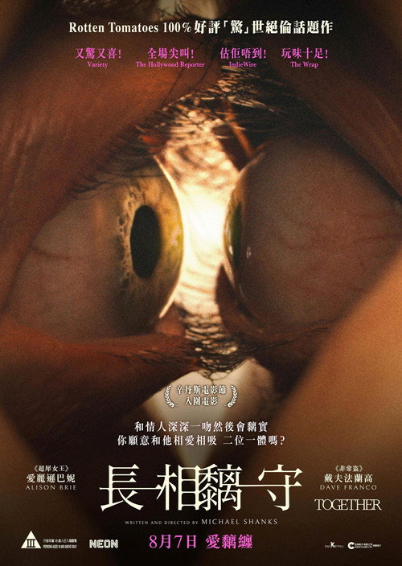
同甘共苦 Together
他们先是分不开，然后才想起来自己为什么想分开。
剧情梗概
交往十年的蒂姆和米莉决定离开纽约搬到乡下，试图把一段已经变成习惯的关系救回来。蒂姆并不情愿，米莉则清楚他们只是在拖延。新家后面有一片树林，林子里有个塌陷的洞穴。一场暴雨里两人先后掉进去，蒂姆渴了，喝了洞里的水。第二天早上，他们的腿粘在了一起——不是胶水，是真的长在了一起。接下来发生的一切，都在朝一个方向走：越远的心，越近的肉。
亮点
- 迈克尔·尚克斯的导演处女作。2025 年圣丹斯午夜单元首映后，NEON 当场拿下发行权。
- 爱丽森·布里与戴夫·弗兰科在现实中就是夫妻，这是他们婚后第一次真正共同主演（此前合作的《我以前认识的人》由布里编剧、弗兰科导演）。
- 设定直接来自柏拉图《会饮篇》里阿里斯托芬讲的那则寓言：人原本是球形，被劈成两半，终其一生寻找另一半。影片只是把「寻找」拍成了 irreversible 的字面事实。
- 几乎全部依赖实体特效——假体、绳索、钢丝，把两个演员硬绑在一起。导演原话：「我们每天都在折磨戴夫和爱丽森。」
- 内地 2025 年 9 月 19 日上映，是第二届金熊猫奖「挚爱光影计划」的合作影片，映前在全国 20 城点映。
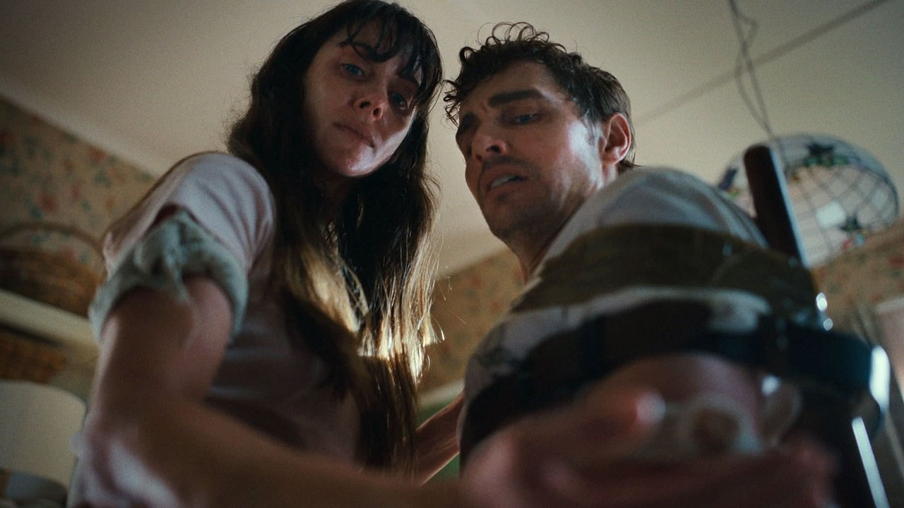
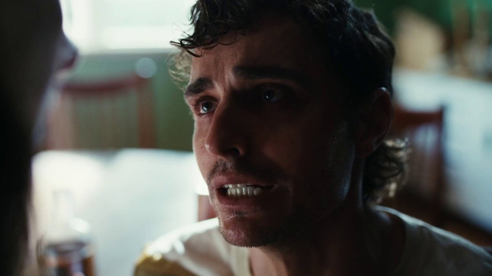
导演与主创 · 他们的历史作品
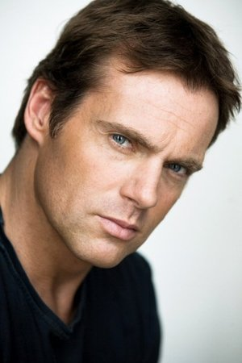
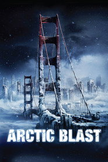
极地寒流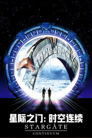
星际之门：时空连续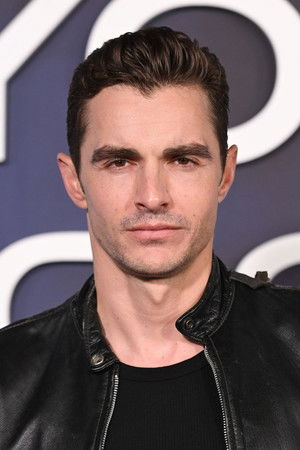
 惊天魔盗团
惊天魔盗团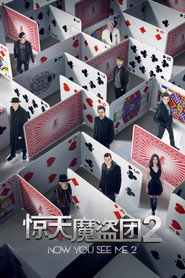
惊天魔盗团2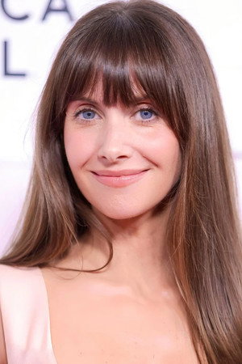
 前程似锦的女孩
前程似锦的女孩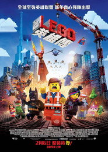
乐高大电影 单身指南
单身指南短评（轻微剧透）
把「离不开你」拍成一句诅咒，是本片最聪明的地方——它甚至不需要太多恐怖片技巧，因为婚姻本身就提供了全部素材。前四十分钟你可能以为在看《蓝色情人节》：两个人为了该不该搬家拌嘴，为了谁付出更多冷战，为了要不要孩子含糊其辞。然后超自然部分一进场，所有的情绪都开始有物理重量。尚克斯很清楚自己在拍什么：每一次身体黏连，都精准对应他们关系里没说出口的那句话。所以真正让我不适的不是那些特效镜头（虽然确实很猛），而是前半段那些争吵太真实了——你会在里面认出自己。布里和弗兰科的夫妻身份是双刃剑：它给了表演一种排练不出来的默契，也让你无法不去想他们本人。缺点也说清楚：中段节奏略重复，第三幕收得急，主题其实不深，豆瓣没形成高分也说明它「好看但不耐嚼」。但作为一部把亲密关系的恐惧具象化的电影，它在同类型里是近几年完成度最高的。
为什么值得一看
能接受身体恐怖的观众；对亲密关系议题有兴趣的人；《某种物质》《生吃》那一路的影迷。尺度相当大（R 级，多场融合与自残画面），别在饭后看，也别和刚吵架的对象一起看。内地院线已下线，Disney+ / Hulu 已上线。
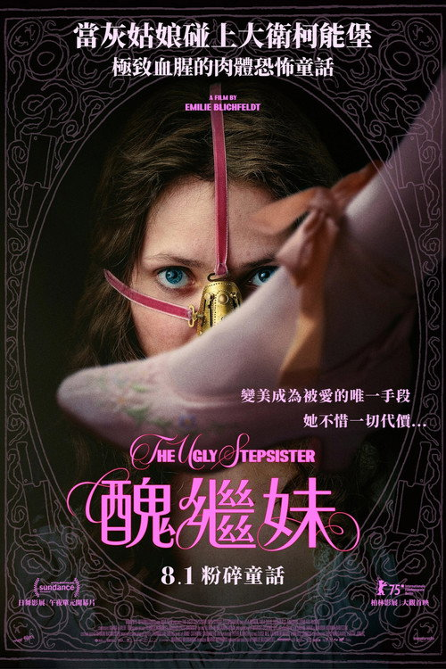
丑陋的继姐 The Ugly Stepsister
她砍下脚趾的时候，继母只说了一句：你砍错脚了。
剧情梗概
贵族遗孀贝卡带着女儿艾尔维拉改嫁破产老贵族，指望着靠女儿在王子选妃中胜出翻盘。问题是艾尔维拉不够漂亮。于是她开始改造自己：敲断鼻骨重做、缝睫毛、生吞绦虫卵减肥。而她的继妹艾格妮丝什么都不做，天生就赢。舞会那晚，水晶鞋成了唯一的通行证，艾尔维拉举起了刀——然后她妈告诉她，砍错脚了。
亮点
- 挪威导演埃米莉·布里西菲尔特的长片处女作，2025 圣丹斯首映、柏林电影节全景单元。
- 莉娅·迈伦凭艾尔维拉一角入围柏林泰迪熊奖最佳女主角。她把角色从「丑陋恶人」演成了「美丽囚徒」。
- 拒绝 CGI：断鼻用可断裂假体，缝睫毛那场真的在演员眼皮上穿线，断趾道具保留了真实甲床纹理。
- 导演的创作起点是童年困惑——「为什么继姐一定是坏人？」她说，是迪士尼让我们相信丑陋等于邪恶。
- 「削足适履」本来就写在格林童话原版里，本片只是拒绝把它浪漫化：它让那一刀真的发生。
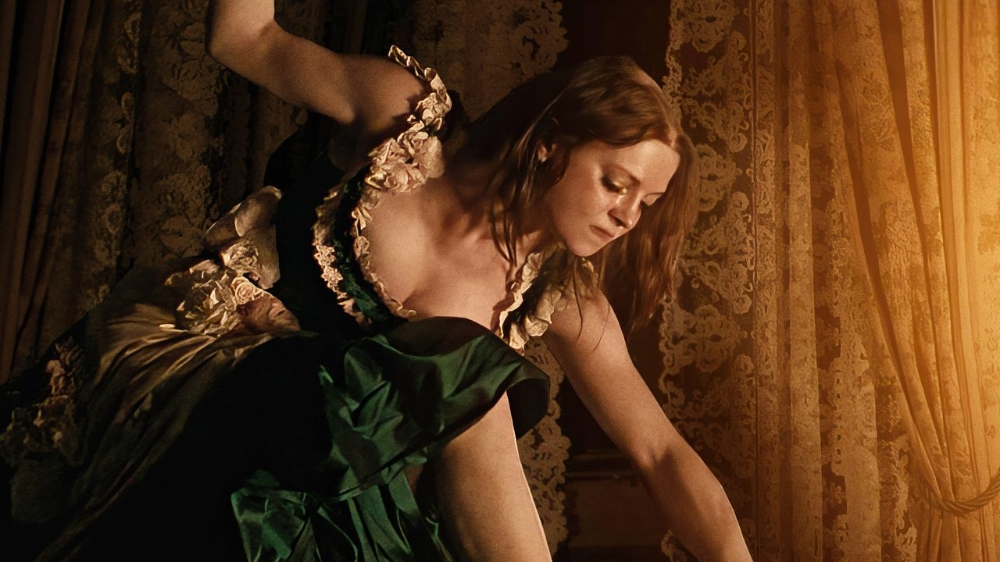
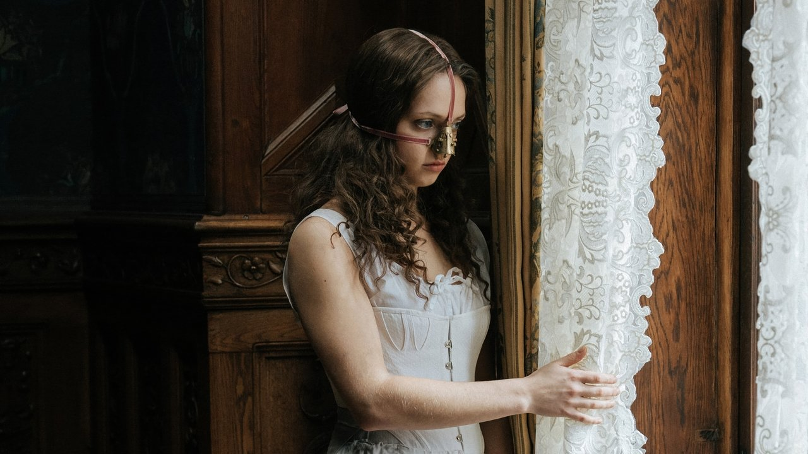
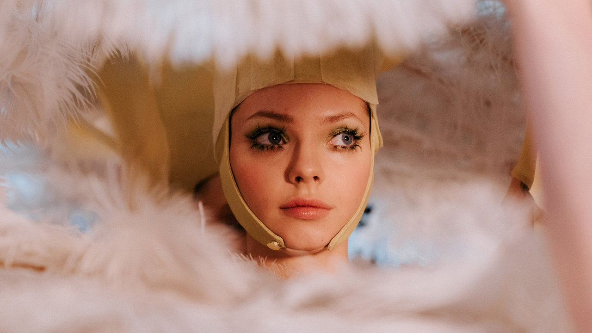
导演与主创 · 他们的历史作品
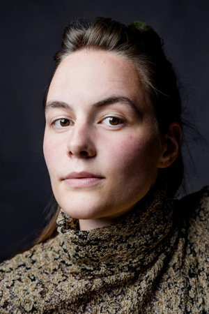
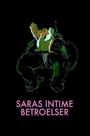
Sara's Intimate Confessions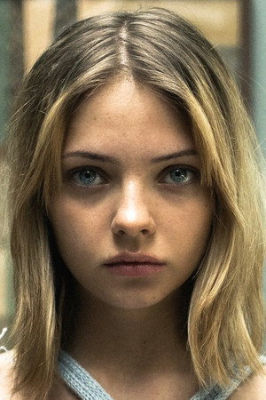
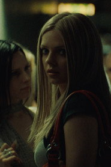
Groupies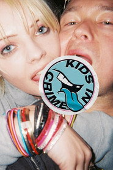
Kids in Crime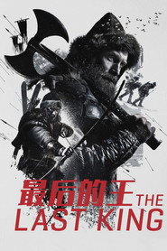
最后的王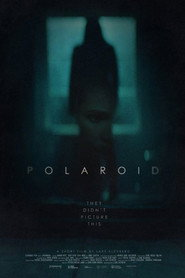
Polaroid短评（轻微剧透）
这是今年把身体恐怖用作社会批评、做得最锋利的一部。它的厉害之处在于没有把艾尔维拉写成反派——她不是恶，她是被一套标准训练出来的好学生。断鼻、吞虫、削足，三场改造戏层层加码，而每一场旁边都站着那个一句话不必做的继妹，这个对照本身就是全部论点。更狠的是结局：艾格妮丝也不是什么纯洁公主，她早就和马夫私通；所谓「美德」和「美貌」一样，都是包装。所以影片真正讽刺的不是某个女人，是那套让女人互相监督的系统。迈伦的表演撑起了整部片——她在剧痛中还坚持读王子的诗集，那段戏把「她追的不是王子，是被爱的可能性」说透了。缺点也实在：继母的动机偏单薄，只是「想攀权贵」；艾格妮丝那条线收得仓促；部分血腥场景（尤其绦虫那段）会让不少人提前离场，这部分批评是合理的。但它在「美役」这个议题上给出的东西，比《某种物质》更具体，也更疼。
为什么值得一看
《某种物质》《钛》《生吃》的影迷；对身体恐怖有耐受度的人；想看一次真正有立场的童话改编的人。血腥与自残画面强度很高，心理承受力弱的请避开。内地无引进，流媒体可看。
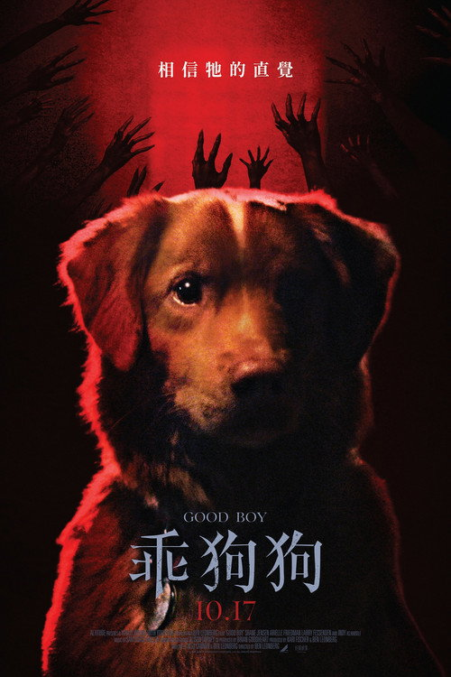
好狗狗 Good Boy
它总是先看见。它只是说不出来。
剧情梗概
托德带着他的狗印地搬进祖父留下的乡间老宅。祖父刚去世，房子空了很久。托德的姐姐警告他这屋子不干净。从搬进去第一晚开始，印地就不对劲——它盯着空的墙角，冲着什么看不见的东西低吼，梦见一只早就死掉的狗。托德的身体在一天天变差，而印地是唯一知道发生了什么、却没有任何办法告诉他的那个。
亮点
- 全片从狗的视角拍摄，摄影机长期压在离地约三四十厘米的高度；人类演员的脸经常在画面外。
- 印地是导演本·莱昂伯格与制片人卡里·菲舍尔自己的狗。整部片拍了三年、400 多个拍摄日，因为每天只能让印地工作两小时，以免它紧张。
- 印地拿了 Astra 奖「恐怖/惊悚类最佳表演」，击败爱丽森·布里（《同甘共苦》）、莎莉·霍金斯（《复活她》）、伊桑·霍克（《黑色电话2》）——史上第一个拿到人类表演奖的动物。
- IFC 曾以印地的名义致信美国电影艺术与科学学院，请求把动物演员纳入最佳男主角考虑范围。
- 斯蒂芬·金在社交平台主动推荐：「本·莱昂伯格这部短小精悍的《好狗狗》是从狗的视角拍的。它成立。」
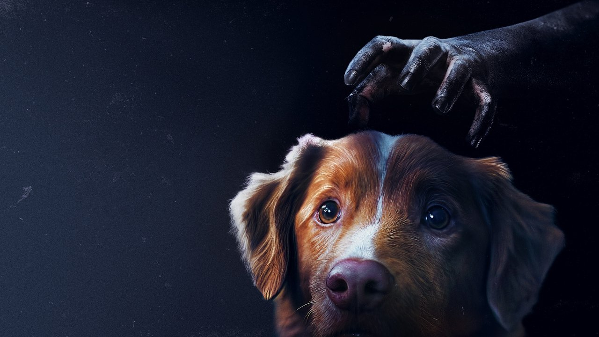
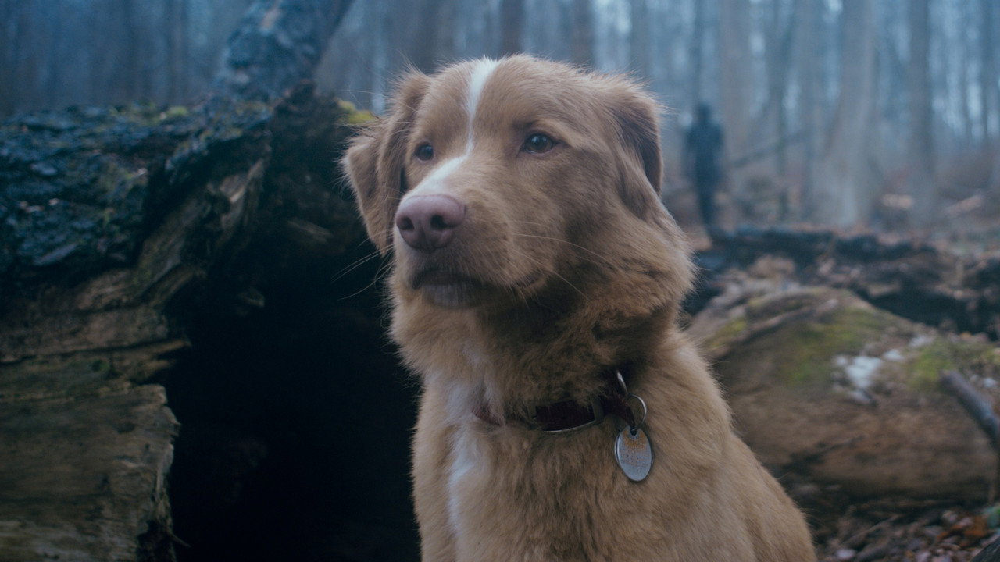
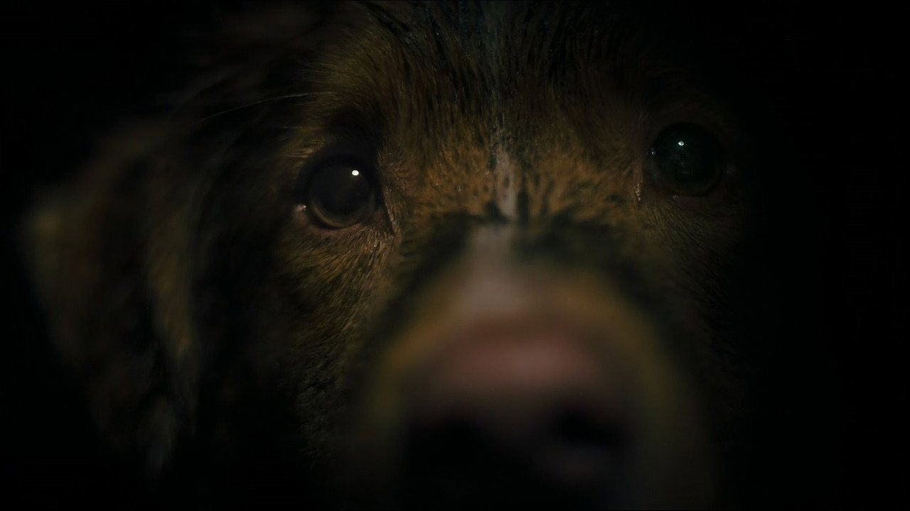
导演与主创 · 他们的历史作品
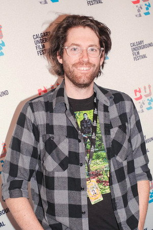
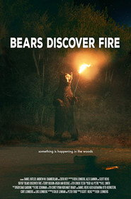
Bears Discover Fire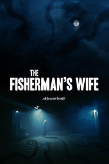
The Fisherman's Wife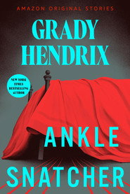
Ankle Snatcher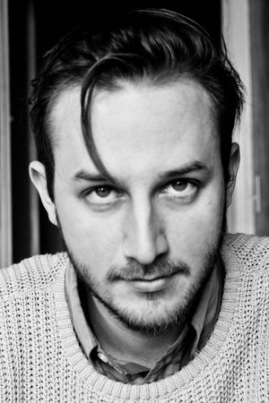
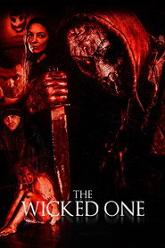
The Wicked One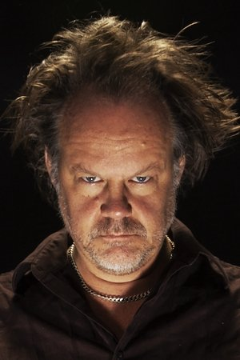
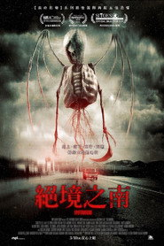
一路向南 X
X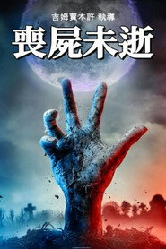
丧尸未逝 你是下一个
你是下一个短评（轻微剧透）
这个点子听起来像个笑话，结果它是 2025 年最真诚的恐怖片之一。莱昂伯格做对的关键是：他没有把「狗视角」当成噱头，而是当成一套严格的限制。摄影机贴地，于是你永远看不到门框上方有什么；印地听不懂人话，于是你听不懂剧情；它只能闻、只能听、只能感受，于是电影的恐惧全部来自气氛而不是信息。这反而回到了恐怖片最原始的工作原理——不知道，才是真的怕。更狠的一层是情感：印地完全明白托德在恶化，它什么也做不了，只能留下来。73 分钟，短到刚好不给你喘息。缺点也说清楚：故事确实很薄，几乎全部张力来自那个视角设定；中段有几段重复；有观众觉得人类演员的表演撑不起这个框架，这个批评成立。但结尾那段，我劝你留点纸巾——不是因为狗会死（别担心，它不会），而是因为你会突然意识到，你刚刚看的其实是「忠诚」这个词的字面意思。
为什么值得一看
养狗的人（尤其是养过狗的人）；想看一部短、狠、不拖的恐怖片的人；对形式实验有兴趣的影迷。放心：狗没事。Shudder / AMC+ 已上线，Prime Video 可加订。
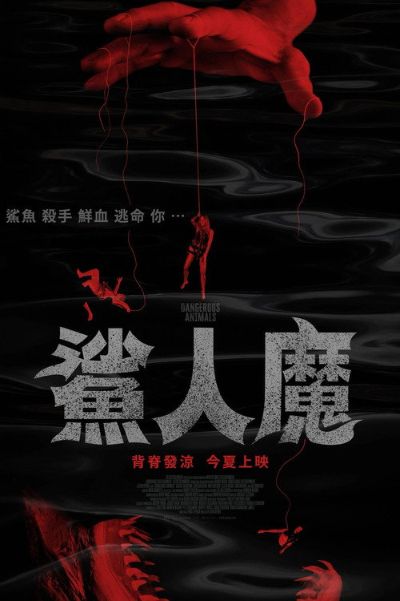
危险动物 Dangerous Animals
鲨鱼只是工具。开船的那个才是怪物。
剧情梗概
冲浪客泽弗在海边被人绑走。醒来时她在一条船上，被吊在船舷外的吊具里，脚下是水。绑她的人叫塔克，开着一家鲨鱼观光公司，也用这家公司挑「客人」。他有一整套仪式：录影、念白、把人放进海里。泽弗的新男友摩西找了过来，然后也被抓住。两个人，一条船，一片海，和一个觉得自己在做艺术的疯子。
亮点
- 澳大利亚导演肖恩·伯恩（《夺命之爱》《恶魔的糖果》）的第三部长片。
- 2025 年戛纳「导演双周」单元首映，是自 2014 年以来第一部入围该单元的澳大利亚长片。
- 杰·科特尼（《自杀小队》回旋镖队长、《虎胆龙威5》）饰塔克。《澳大利亚人报》直接称这是「他生涯最佳表演」。
- 影评人专门表扬的一点：片里的鲨鱼「只是鲨鱼」——不是基因改造、不是复仇狂鲨、不会记仇，这反而让它们更可信。
- 在昆士兰黄金海岸实拍，为当地带来超过 1070 万澳元的经济收益；IFC 与 Shudder 在戛纳前就买下了北美版权。
导演与主创 · 他们的历史作品
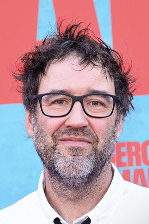
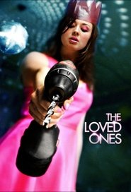
夺命之爱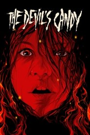
恶魔的糖果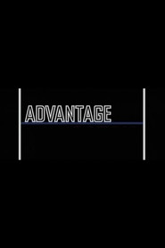
Advantage Satan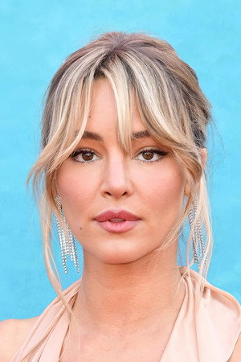
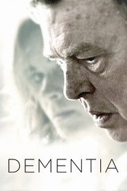
行尸婆婆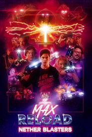
装弹暴击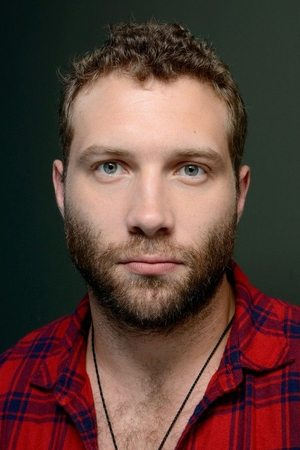
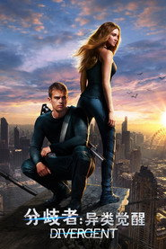
分歧者：异类觉醒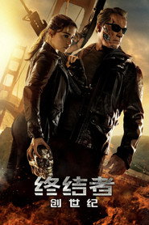
终结者：创世纪短评（轻微剧透）
鲨鱼片这几年基本被拍成了笑话，伯恩的解法是不跟它们比——他把真正的怪物放到了船上。这是一个很朴素的判断：人和鲨鱼的对峙我们已经看了五十年，但「一个体面的生意人决定把活人喂下去，并且要录像」这件事，其实现在才最有说服力。科特尼的表演是全片引擎，他那种澳洲阳光式的热情一旦翻过来，比任何狰狞都可怕；哈西·哈里森则接住了「final girl」的位置，她的每一次反扑都是靠脑子而不是运气。伯恩的调度很老派：实景、长镜、不靠剪辑掩盖，水下镜头用的是真鲨鱼而不是 CG。缺点也明确：第二幕在水面上拖得有点久，个别转折靠巧合推动；《卫报》给的 2 星批评它「廉价、像直接上流媒体」，这个说法偏刻薄但不是没道理——它确实不是一部严肃电影，它是一部很知道自己在干嘛的 B 级片。作为「鲨鱼片自《大白鲨》以来口碑最好的一部之一」，它配得上这个说法。
为什么值得一看
鲨鱼片/生存惊悚片的爱好者；《狼溪》那一路澳洲粗粝恐怖的观众；想在 98 分钟里被认真吓一次的人。暴力与血腥直接，无引进，Hulu / AMC+ 已上线。
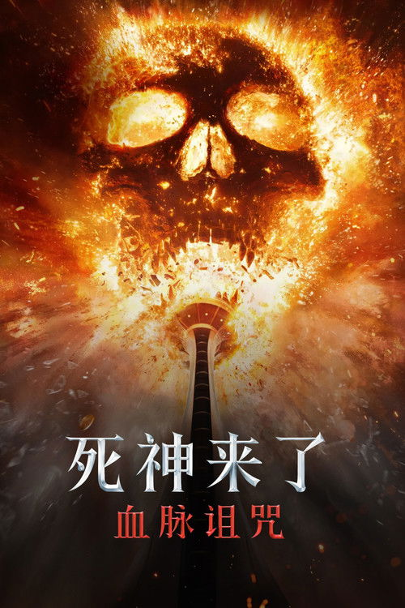
死神来了：血脉诅咒 Final Destination: Bloodlines
这一次死神不追个人，追血脉。
剧情梗概
大学生斯蒂芬妮被同一个噩梦反复折磨：1968 年，一座空中餐厅在祖母艾丽丝眼前崩塌。艾丽丝预感到了灾难，救下了所有人——包括那些本该死在那里的人，以及他们之后会生下的孩子。五十年后，死神按着家谱一个一个来收。斯蒂芬妮必须弄清楚那套顺序，而每一次「破解」，都只是给死神换一种更有创意的做法。
亮点
- 系列第六部，距上一部时隔 14 年。第一次把诅咒从「幸存者本人」扩展到「他们的后代」——这是这个 IP 二十多年来最有价值的一次设定升级。
- 内地首次引进，2025 年 8 月 22 日上映，110 分钟未删减，是《死神来了》25 年来第一次登上中国大银幕。
- 托尼·托德再次出演系列中的验尸官威廉·布卢德沃思，这也是他 2024 年去世前的最后一部作品。
- 全球票房 2.86 亿美元，是系列最高，北美本土 1.38 亿。
- 开场那场 1968 年空中餐厅的连锁坍塌，是全片最长、也最完整的一整套「鲁布·戈德堡式」死亡设计。
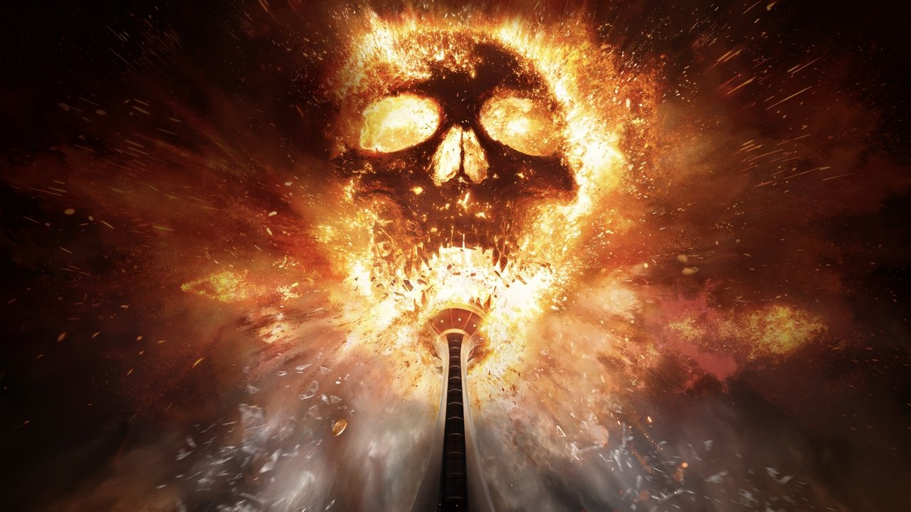
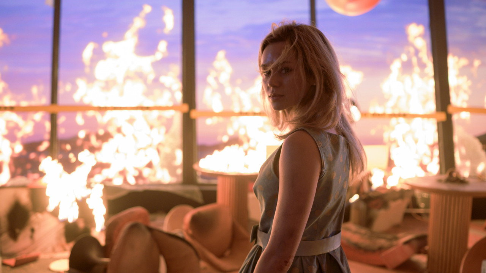
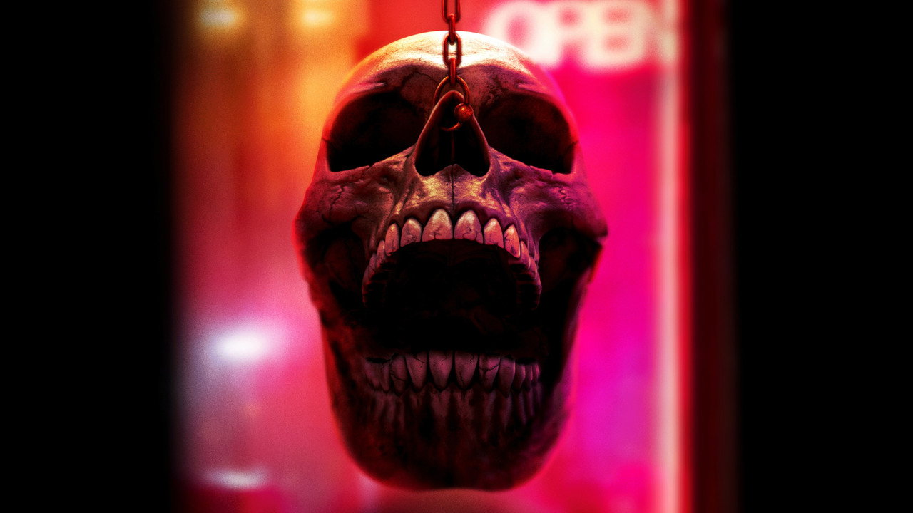
导演与主创 · 他们的历史作品
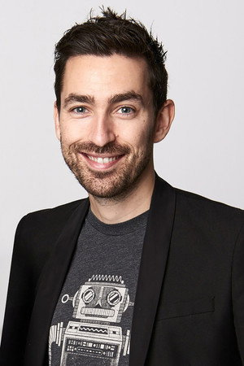
短评（轻微剧透）
把「血脉」这个设计加进来之后，这个系列第一次有了真正的焦虑：你的父母当年侥幸活下来，代价是现在轮到你。它把一个原本纯属巧合的设定变成了代际债务，道德重量一下子就出来了——你其实什么都没做错，你只是被生下来了。执行上也是系列最稳的一次：节奏紧凑、不拖，每一场死亡都给了足够的铺垫和「差一点」的停顿；而且它很清醒地知道自己荒诞，往黑色喜剧上靠了一步，反而比硬装恐怖更讨喜。那场 MRI 的戏（如果看过就知道我说的是哪场）把「日常物件变成凶器」这个老手艺做出了新花样。缺点也说清楚：规则一如既往经不起推敲，它从没解释为什么艾丽丝有预感、为什么孙女后来也有了；几处配角纯属等着被点名的工具人;豆瓣 6.9 反映的就是「设计精巧但人物单薄」。但作为一部暑期爆米花恐怖片，它比过去五部都更自信，也更知道自己好玩在哪。
为什么值得一看
系列老粉（这次的设定升级值得看）；想在影院被「设计感」逗乐而不是被吓到的观众；喜欢黑色喜剧式死亡的人。血腥程度高、多处身体创伤特写，心脏不好或怕医用器械的留意。内地院线已下线，HBO Max 已上线。
长腿怪 Longlegs
她一直以为自己在追凶手。凶手一直知道她住哪儿。
剧情梗概
1990 年代的俄勒冈。FBI 新人探员李·哈克被派去查一桩悬案：一连串灭门案，每一起都是父亲杀全家后自杀，现场留下一封写满撒旦符号、署名「长腿」的信，而笔迹不属于屋里任何一个人。哈克有某种说不清的直觉，上司把她派过去正是因为这一点。随着她一点点破译那些密码，她发现自己和这些案子的关系，比她以为的要近得多。
亮点
- 奥斯古德·珀金斯自编自导——他是《惊魂记》安东尼·珀金斯之子，这几年成了恐怖片最稳定的作者之一。
- 尼古拉斯·凯奇同时担任制片。他的造型与声音处理到几乎认不出本人，全片出场时间其实很短。
- 2024 年最成功的电影营销案例之一：预告片几乎不露凯奇正脸，靠「未知」把成本 1000 万美元的片子推到全球 1.28 亿美元票房。
- 麦卡·梦露（《它在身后》）饰哈克。她的「直觉」是整部片结构上的关键。
- 口碑极度分裂：影评人 85%、Metacritic 77，但豆瓣只有 5.5、观众爆米花 68。
导演与主创 · 他们的历史作品
短评（轻微剧透）
这是一部你必须先决定「要不要跟着它的调子走」的电影。珀金斯几乎放弃了叙事推进，他把全部力气花在氛围上：构图永远把人放在画面边缘，声音永远比画面早半拍，每一场戏都像隔着一层脏玻璃在看。这种处理让很多人觉得「什么都没发生」，也让另一批人全程坐立不安——我属于后者，但我也承认它的剧本确实撑不起这个规格的野心。真正让它立住的是凯奇：那张脸、那个声音、那种过度的客气，你在恐怖片里很久没见过这么有风险的表演了，而且他聪明地没有多演，全片出场加起来可能不到二十分钟。梦露则是另一个支点，她的哈克从头到尾像在梦游，而当你意识到她为什么梦游的时候，前面所有的迟钝都变成了伏笔。缺点必须说清楚：剧情逻辑经不起细想，第三幕的转折来得突兀；《环球银幕》说它「全球票房几乎完全归功于营销」，这个判断偏狠但我无法反驳。它更像一次风格实验，而不是一部严丝合缝的惊悚片。
为什么值得一看
奥斯古德·珀金斯的影迷（《怪猴》《格蕾特和韩塞尔》）；喜欢《沉默的羔羊》《七宗罪》那种阴冷探案气质的观众；尼古拉斯·凯奇的影迷。豆瓣仅 5.5、两极严重，喜欢强情节的会失望。内地无引进，主流平台可租看。
偷天盗日 Caught Stealing
整件事的起因，是他答应帮邻居照看一只猫。
剧情梗概
1998 年的纽约东村。汉克·汤普森曾经是前途看好的棒球手，如今在酒吧端盘子，靠止痛药和酒精过日子。邻居要去一趟外地，请他帮忙喂猫。然后门被敲响了——先是俄国人，然后是警察，然后是哈西迪犹太帮。所有人都想要一样东西，而汉克完全不知道那样东西是什么。他唯一的线索是：那只在公寓里、什么事都没做的猫。
亮点
- 达伦·阿罗诺夫斯基（《梦之安魂曲》《黑天鹅》《母亲！》《鲸》）第一次拍纯类型片，而且是一部犯罪喜剧。
- 奥斯汀·巴特勒（《猫王》《沙丘2》《摩托骑士》）主演；佐伊·克拉维茨、雷吉娜·金、马特·史密斯、列维·施瑞博尔、文森特·多诺费奥、坏痞兔、卡罗尔·凯恩。
- 改编自查理·休斯顿的同名小说，他是「汉克·汤普森」系列小说的作者。
- 1998 年的设定不是怀旧装饰，而是情节装置：没有智能手机、没有随时可得的信息、不是每个角落都有信号，所以汉克真的会「联系不上人」。
- 内地 2025 年 10 月 24 日上映，105 分钟。
导演与主创 · 他们的历史作品
 好莱坞往事
好莱坞往事 疯狂的麦克斯4：狂暴之路
疯狂的麦克斯4：狂暴之路 蜘蛛侠：平行宇宙
蜘蛛侠：平行宇宙短评（轻微剧透）
阿罗诺夫斯基拍了一部「不折磨主角」的电影，这本身就是新闻。过去二十年他基本在拍同一件事：一个人在执念里自我毁灭。这次汉克也是个废人，但镜头不再居高临下地审判他，而是真的觉得好玩——那些黑色幽默的段落，是他职业生涯里最松弛的部分。真正聪明的是 1998 年这个选择。在一个信息永远在线的时代，犯罪片的紧张感基本被手机杀死了；把故事放回拨号上网的纽约，每一个「找不到人」都重新变成了危机。巴特勒的表现是另一个惊喜：他把汉克演成一个善良但迟钝的人，而不是硬汉，于是那些挨打才真的疼。缺点也清楚：群像太满，几条帮派线凑在一起偶尔像在赶场；中段有一段节奏散；豆瓣 6.1 说明内地观众对这种「盖·里奇式热闹」已经不太买账。但作为一次导演的自我松绑，它比我预期的要好看得多，也比《鲸》讨人喜欢。
为什么值得一看
阿罗诺夫斯基的影迷（想看他轻松一面的）；《两杆大烟枪》《偷拐抢骗》那一路黑色犯罪喜剧的观众；奥斯汀·巴特勒的影迷。暴力直接、脏话密集，别当合家欢。内地院线已下线，流媒体可看。
爱丁顿 Eddington
这不是一部政治电影。这是两个男人在一个小镇里互相毁掉对方。
剧情梗概
2020 年 5 月，新墨西哥州爱丁顿镇。警长乔·克罗斯拒绝执行口罩令，和要引进 AI 数据中心的市长泰德·加西亚正面冲突，并宣布参选市长。与此同时，乔的妻子路易丝沉迷末日论、整天做布偶，岳母在网上传播阴谋论。抗议、对峙、枪声——事情一件接一件地失控，而每一次失控，都让某个远处的、更会利用混乱的人获得更多空间。
亮点
- 阿里·艾斯特（《遗传厄运》《仲夏夜惊魂》《博很恐惧》）自编自导的第四部长片，入围第 78 届戛纳主竞赛单元金棕榈。
- 华金·菲尼克斯、佩德罗·帕斯卡、艾玛·斯通、奥斯汀·巴特勒、卢克·葛莱姆斯、迪尔德丽·奥康奈尔。
- 摄影达吕斯·康吉（《七宗罪》《晚安好运》《原钻》），新墨西哥的外景被拍得干、亮、几乎没有阴影。
- 成本 2500 万美元，全球票房仅约 1370 万——A24 近年少见的商业失手。
- 口碑两极：IndieWire 把它列入 2025 年度 25 佳，《独立报》等则给出差评；豆瓣 6.4、观众 70%，都属「分裂」。
导演与主创 · 他们的历史作品
 黑白魔女库伊拉
黑白魔女库伊拉 超凡蜘蛛侠
超凡蜘蛛侠短评（轻微剧透）
艾斯特这次不拍邪教，他拍的是「分裂」本身，而且他拒绝站在任何一边。这是本片最勇敢、也最招骂的地方：乔不是英雄，泰德也不是；一个是虚妄的硬汉，一个是精致的机会主义者，两人互相需要对方才能成立。看前半段你会大笑，因为那些荒诞太熟悉了——口罩、数据中心的听证会、举着标语的邻居、直播里的阴谋论；到后半段你就笑不出来了，因为艾斯特把同样的荒诞推向了暴力，而你发现前面每一处好笑的地方，都是后面每一次开枪的引信。菲尼克斯的表演是近年最让人不适的一次：他演的不是坏人，是一个真心相信自己在对的人，这比坏人要可怕得多。缺点也确实存在：148 分钟里人物众多、支线庞杂，第三幕从讽刺滑向惊悚时有些失控；《综艺》说它「会让你想要更多，但不是它给的那种更多」，我理解这个批评。它不是一部让人舒服的电影，而且它也没打算让你舒服——它只想让你承认，你所处的这个局面有多荒唐。
为什么值得一看
《遗传厄运》《仲夏夜惊魂》的影迷；想看一部敢于两边都不讨好的政治寓言的人；菲尼克斯/帕斯卡/斯通的影迷。节奏慢、片长长、观点尖锐且不留安全区，想轻松的请绕道。内地无引进，流媒体可看。
群体 Colony
感染者不再各自为战——它们开始共享同一个念头。
剧情梗概
首尔一栋 120 层的摩天大楼里正在举办生物科技发布会。研究员徐英哲的「群体意识」成果被人剽窃，他先打了一通电话给警方，宣布这不是实验、是恐怖袭击，然后把病毒注进了自己体内。感染在几分钟内扩散，军方封锁整栋楼、切断通讯。楼里剩下的上千人很快发现，这些感染者不只是会咬人：它们靠体表黏液连成一张网，共享视野、共享信息，学会的猎杀技巧会瞬间传给全体。生命科学家权世静带着一小队幸存者往楼顶走，因为据说那里有一个注射过疫苗的人。
亮点
- 延尚昊（《釜山行》《釜山行2：半岛》《首尔站》）自编自导，把舞台从列车换成了一栋 120 层的垂直迷宫。
- 全智贤饰权世静，这是她继《暗杀》之后时隔 11 年重返大银幕。她说自己是延尚昊的影迷，接到邀约没有犹豫。
- 核心设定是「群体意识」：感染者通过黏液共享视野与信息，会设陷阱、会模仿、会协同围捕——个体越弱，群体越强。
- 卡司：具教焕（《釜山行2：半岛》《格杀福顺》）饰徐英哲、池昌旭饰保安崔贤硕、申贤彬、金新绿、高洙。
- 投资约 200 亿韩元，2026 年戛纳午夜展映单元首映；韩国上映后连续四周票房冠军，观影人次 594 万。
导演与主创 · 他们的历史作品
短评（轻微剧透）
「丧尸有了局域网」这个点子，是延尚昊自《釜山行》之后最好的一次类型设计。它解决了一个长期问题：丧尸片看多了会腻，是因为丧尸永远是笨的、散的、可以被绕过去的。当它们开始共享视野，整个空间关系就变了——你不能再躲，因为只要有一只看见你，全部都看见了；你也不能耍小聪明，因为第一次奏效，第二次就失效。这让 122 分钟里的每一次逃脱都被迫升级，楼里那几个动作段落（电梯井、地下车库、监控室）是真的拍得紧张。全智贤的回归也值得一看：她演的不是一个能打的英雄，而是一个靠专业知识判断局势的人，这个定位让她不用硬拗动作戏也有说服力。缺点必须说清楚：它确实「娱乐有余、深度不足」——假新闻、群体盲从、资本窃取科研成果这些议题全都被提出来了，也全都没展开，最后都让位给打斗；人物基本按「该死的类型」分配命运，你能提前猜到谁活谁死；豆瓣 6.1、IMDb 6.4 反映的就是这个落差。但如果你想要的是一部在密闭空间里不断升级的逃生片，它完成得相当漂亮。
为什么值得一看
《釜山行》《僵尸校园》的观众；想在密闭空间里被追两个小时的人；全智贤的影迷（她时隔 11 年回归大银幕）。血腥程度高，议题浅，别期待第二部《釜山行》。内地无引进，韩国院线已下线。
糖精 Saccharine
她越瘦，那个鬼就越大。
剧情梗概
医学生汉娜重遇高中时很胖的老同学，对方现在瘦得像换了个人。对方给了她一种叫「灰」的减肥药。汉娜买不起，于是她把样品带进了解剖实验室——化验结果让她吃了一惊，但她没有停。她开始用课上那具女尸（学生们管她叫「大贝莎」）自己做药。体重掉得飞快，与此同时，一个越来越庞大、越来越饿的东西开始在她身边出现。她母亲说，那是佛教里讲的「饿鬼」，因为骨灰被亵渎而发怒。
亮点
- 娜塔莉·埃丽卡·詹姆斯（《遗落家庭》Relic、《7A公寓》——后者是《罗斯玛丽的婴儿》前传）自编自导的第二部长片。
- 蜜朵莉·弗朗西斯（《实习医生格蕾》《瞒天过海：美人计》）饰汉娜；丹妮尔·麦克唐纳（《伯德小姐》《饺子公主》）、玛德琳·麦登（《时光之轮》）。
- 2026 圣丹斯午夜单元世界首映，随后进入柏林特别午夜单元并获泰迪熊奖提名。
- 西方媒体直接叫它「《某种物质》2.0」，与《生吃》《钛》放在一起讨论——这是它最大的卖点，也是它最受质疑的地方。
- Shudder 拿下北美与英国版权，2026 年 5 月 22 日全球上映，7 月上线流媒体。
- 「饿鬼」设定取自佛教传说：汉娜的日裔母亲叫它 hungry spirit。
导演与主创 · 他们的历史作品
 瞒天过海：美人计
瞒天过海：美人计短评（轻微剧透）
本片最聪明的一处决定，是把女主角设定成医学生——因为她太懂了，所以「药是用骨灰做的」这个本该留到第三幕的反转，在她第一次化验时就被揭穿了。而这个揭穿没有让她停手，这比任何惊吓都可怕：她明知道自己在吃什么，还是选择继续。詹姆斯要写的不是「减肥有多伤身」，而是「一个人为什么愿意为了被爱而吞下另一个人的骨灰」，这个提问比《某种物质》落得更实。弗朗西斯的表演撑住了这个难度，她既要演执念，又要演一个不断给自己找理论依据的聪明人。技术上也很扎实：大量进食的特写被拍得既诱人又恶心， spoon 上那张变形的倒影是全片最不安的一帧。缺点同样明显：112 分钟偏长，后期的「暴食场景」重复到失去了冲击力；几条家庭支线（尤其父亲那条）像是为了凑议题硬加的；观众爆米花只有 53%，说明普通观众对它的耐受力远不如影评人（71%）。导演自己说这是「写给所有曾梦想拥有另一副身体的人的一封情书」——这句话解释了它的温柔，也解释了它的失控。
为什么值得一看
《某种物质》《生吃》《钛》的影迷；《遗落家庭》的观众；对容貌焦虑/身体议题有共鸣的人。进食与身体恐怖画面极具生理冲击力，进食障碍患者请谨慎。内地无引进，Shudder 已上线。